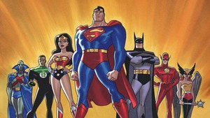

wonderwoman

Aquaman

DC Cartoons
التأسيس: تأسست الشركة عام 1934 باسم "ناشونال ألايد ببليكيشنز" (National Allied Publications) على يد الرائد مالكولم ويلر-نيكولسون.
ظهور سوبرمان: في عام 1938، قدمت الشركة شخصية سوبرمان في العدد الأول من مجلة "أكشن كوميكس"، مما أحدث ثورة في عالم القصص المصورة.
الوث المقدس: تبع ذلك ظهور شخصيتين أيقونيتين هما باتمان (1939) ووندر وومان (1941)، ليكتمل بهم ما يُعرف بـ "الثالوث المقدس" لأبطال دي سي.
لعصر الذهبي: خلال الأربعينيات، شهدت الشركة ازدهارًا كبيرًا في مبيعاتها وأصبحت جزءًا أساسيًا من ثقافة البوب.
لتحديات: في الخمسينيات، واجهت صناعة القصص المصورة تراجعًا كبيرًا وتحديات بسبب رقابة المحتوى
عصر الفضي: في الستينيات، بدأت دي سي "العصر الفضي" للقصص المصورة، حيث أعادت تقديم شخصيات قديمة بأسلوب جديد وابتكرت أبطالًا جددًا.
نضج المواضيع: في السبعينيات، بدأت القصص المصورة في استكشاف مواضيع أكثر نضجًا وجدية، مثل القضايا الاجتماعية والسياسية.
حداث كبرى: في الثمانينيات، أطلقت دي سي سلاسل قصص مؤثرة مثل "أزمة على الأراضي اللانهائية" (Crisis on Infinite Earths) التي أعادت ترتيب كون دي سي بأكمله.
توسع: توسعت الشركة إلى ما هو أبعد من القصص المصورة لتشمل الأفلام والمسلسلات التلفزيونية الناجحة، مثل سلسلة أفلام كريستوفر نولان عن باتمان.
وارنر ميديا: أصبحت دي سي كوميكس جزءًا من شركة وارنر ميديا (الآن وارنر براذرز ديسكفري)، مما عزز من قوتها في سوق الترفيه العالمي.
يستوفر نولان (مخرج): أحدث ثورة في أفلام الأبطال الخارقين من خلال ثلاثية "فارس الظلام"، حيث قدم باتمان بأسلوب واقعي وعميق، مع التركيز على الجوانب النفسية والدرامية.
اك سنايدر (مخرج): يُعرف بأسلوبه البصري المميز والمظلم، وقد أخرج أفلامًا أساسية في عالم دي سي السينمائي الموسع، مثل "رجل من فولاذ" و**"فرقة العدالة"**.
كريستيان بيل (ممثل): يعتبر من أفضل من جسد شخصية باتمان على الشاشة الكبيرة، حيث أدى الدور ببراعة في ثلاثية نولان، وقدم أداءً لا يُنسى.
غال غادوت (ممثلة): أصبحت رمزًا لشخصية المرأة المعجزة (Wonder Woman) من خلال أدائها القوي، الذي أضفى على الشخصية شعبية هائلة.
نري كافيل (ممثل): اشتهر بدوره الأيقوني كـ سوبرمان في أفلام زاك سنايدر، حيث قدم نسخة قوية وعصرية من البطل الخارق.
1. ابتكار الأيقونات الخالدة: أبرز نجاحات الشركة هو ابتكارها لشخصيات مثل سوبرمان وباتمان ووندر وومان، الذين أصبحوا جزءًا لا يتجزأ من الثقافة العالمية.
2. إطلاق "العصر الذهبي": بدأت الشركة هذا العصر مع ظهور سوبرمان في عام 1938، مما أدى إلى ازدهار القصص المصورة وإطلاق نوع الأبطال الخارقين.
3. قصص مصورة مؤثرة: نجحت دي سي في إنتاج قصص مصورة ذات شهرة عالمية مثل "The Dark Knight Returns" و "Watchmen"، التي غيرت مفهوم القصص المصورة وجعلتها أكثر عمقًا.
4. سلسلة "The New 52": في عام 2011، قامت الشركة بإعادة إطلاق كل عوالمها وقصصها من جديد، مما جذب قراء جدد وأعاد إحياء بعض الشخصيات.
5. ثلاثية "فارس الظلام": تعتبر هذه الثلاثية للمخرج كريستوفر نولان من أنجح أفلام الأبطال الخارقين على الإطلاق، حيث حققت إيرادات ضخمة ونالت استحسان النقاد.
6. فيلم "الجوكر" (2019): نجاح كبير آخر، حيث حصل على جوائز عديدة منها جائزة الأوسكار، وقدم نظرة مختلفة وجريئة على أحد أشهر أشرار دي سي.
7. "Superman" (1978): يعتبر هذا الفيلم حجر الزاوية في أفلام الأبطال الخارقين، وقد أثبت أن هذه الشخصيات يمكن أن تظهر على الشاشة الكبيرة بإنتاج ضخم.
8. "Batman" (1989): بإخراج تيم بيرتون، أعاد هذا الفيلم شعبية باتمان وقدم رؤية فنية مختلفة ومظلمة للشخصية.
9. "Wonder Woman" (2017): حقق هذا الفيلم نجاحًا كبيرًا على المستويين النقدي والجماهيري، وأظهر أهمية الشخصيات النسائية في عالم الأبطال الخارقين.
10. المسلسلات التلفزيونية: نجحت دي سي أيضًا في عالم التلفزيون بمسلسلات مثل "Arrowverse" و "Smallville" التي حظيت بقاعدة جماهيرية واسعة.
wonderwoman
Aquaman
DC Cartoons
تواصلوا معنا